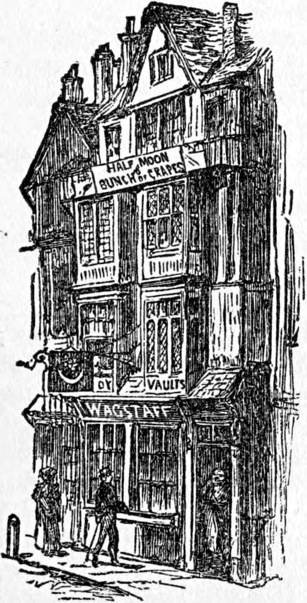

In the month of November, not many years ago, a young man was walking from Highbury to the City. It was one of those grand mornings that dawn only twice or thrice in the course of the year, and are so independent of times and seasons that November even comes in for its share. And it seemed as if young Thomas Worboise had at his toilet felt the influences of the weather, for he was dressed a trifle more gayly than was altogether suitable for the old age of the year. Neither, however, did he appear in harmony with the tone of the morning, which was something as much beyond the significance of his costume as the great arches of a cathedral upheaving a weight of prayer from its shadowed heart toward the shadowless heavens are beyond the petty gorgeousness of the needlework that adorns the vain garments of its priesthood. It was a lofty blue sky, with multitudes of great clouds half way between it and the earth, among which, as well as along the streets, a glad west wind was reveling. There was nothing much for it to do in the woods now, and it took to making merry in the clouds and the streets. And so the whole heaven was full of church windows. Every now and then a great bore in the cloudy mass would shoot a sloped cylinder of sun-rays earthward, like an eye that saw in virtue of the light it shed itself upon the object of its regard. Gray billows of vapor with sunny heads tossed about in the air, an ocean for angelic sport, only that the angels could not like sport in which there was positively no danger. Where the sky shone through it looked awfully sweet and profoundly high. But although Thomas enjoyed the wind on his right cheek as he passed the streets that opened into High Street, and although certain half sensations, half sentiments awoke in him at its touch, his look was oftenest down at his light trowsers or his enameled boots, and never rose higher than the shop windows.
As he turned into the church-yard to go eastward, he was joined by an acquaintance a few years older than himself, whose path lay in the same direction.
"Jolly morning, ain't it, Tom?" said he.
"Ye-es," answered Thomas, with something of a fashionable drawl, and in the doubtful tone of one who will be careful how he either praises or condemns anything. "Ye-es. It almost makes one feel young again."
"Ha, ha, ha! How long is it since you enjoyed the pleasing sensation last?"
"None of your chaff, now, Charles."
"Well, upon my word, if you don't like chaff, you put yourself at the wrong end of the winnower."
"I never read the Georgics."
"Yes, I know I was born in the country—a clod-hopper, no doubt; but I can afford to stand your chaff, for I feel as young as the day I was born. If you were a fast fellow, now, I shouldn't wonder; but for one like you, that teaches in the Sunday-school and all that, I am ashamed of you, talking like that. Confess now, you don't believe a word of what you cram the goslings with."
"Charles, you may make game of me as you like, but I won't let you say a word against religion in my presence. You may despise me if you like, and think it very spoony of me to teach in the Sunday-school, but—well, you know well enough what I mean."
"I can guess at it, old fellow. Come, come, don't think to humbug me. You know as well as I do that you don't believe a word of it. I don't mean you want to cheat me or any one else. I believe you're above that. But you do cheat yourself. What's the good of it all when you don't feel half as merry as I do on a bright morning like this? I never trouble my head about that rubbish. Here am I as happy as I care to be—for to-day, at least, and 'sufficient unto the day,' you know."
Thomas might have replied, had he been capable of so replying, that although the evil is sufficient for the day, the good may not be. But he said something very different, although with a solemnity fit for an archbishop.
"There's a day coming, Charles, when the evil will be more than sufficient. I want to save my soul. You have a soul to save, too."
"Possibly," answered Charles, with more carelessness than he felt; for he could not help being struck with the sententiousness of Thomas's reply, if not with the meaning contained in it. As he was not devoid of reverence, however, and had been spurred on to say what he had said more from the sense of an undefined incongruity between Thomas's habits, talk included, and the impression his general individuality made upon him, than from any wish to cry down the creed in which he took no practical interest, he went no farther in the direction in which the conversation was leading. He doubled.
"If your soul be safe, Tom, why should you be so gloomy?"
"Are there no souls to save but mine? There's yours now."
"Is that why you put on your shiny trot-boxes and your lavender trousers, old fellow? Come, don't be stuck up. I can't stand it."
"As you please, Charles: I love you too much to mind your making game of me."
"Come, now," said Charles Wither, "speak right out as I am doing to you. You seem to know something I don't. If you would only speak right out, who knows if you mightn't convert me, and save my soul, too, that you make such a fuss about. For my part, I haven't found out that I have a soul yet. What am I to do with it before I know I've got it? But that's not the point. It's the trousers. When I feel miserable about myself—"
"Nonsense, Charles! you never do."
"But I do, though. I want something I haven't got often enough; and, for the life of me, I don't know what it is. Sometimes I think it's a wife. Sometimes I think it's freedom to do whatever I please. Sometimes I think it's a bottle of claret and a jolly good laugh. But to return to the trousers."
"Now leave my trousers alone. It's quite disgusting to treat serious things after such a fashion."
"I didn't know trousers were serious things—except to old grandfather Adam. But it's not about your trousers I was talking. It was about my own."
"I see nothing particular about yours."
"That's because I'm neither glad nor sorry."
"What do you mean?"
"Now you come to the point. That's just what I wanted to come to myself, only you wouldn't let me. You kept shying like a half-broke filly."
"Come now, Charles, you know nothing about horses, I am very sure."
Charles Wither smiled, and took no other notice of the asseveration.
"What I mean is this," he said, "that when I am in a serious, dull-gray, foggy mood, you know—not like this sky—"
But when he looked up, the sky was indeed one mass of leaden gray. The glory of the unconditioned had yielded to the bonds of November, and—Ichabod.
"Well," Charles resumed, looking down again, "I mean just like this same sky over St. Luke's Work-house here. Lord! I wonder if St. Luke ever knew what kind of thing he'd give his medical name to! When I feel like that, I never dream of putting on lavender trousers, you know, Tom, my boy. So I can't understand you, you know. I only put on such like—I never had such a stunning pair as those—when I go to Richmond, or—"
"Of a Sunday, I believe," said Worboise, settled.
"Of a Sunday. Just so. The better day, the better deed, you know, as people say; though, I dare say, you don't think it."
"When the deed is good, the day makes it better. When the deed is bad, the day makes it worse," said Tom, with a mixture of reproof and "high sentence," which was just pure nonsense.
How much of Thomas's depression was real, and how much was put on—I do not mean outwardly put on without being inwardly assumed—in order that he might flatter himself with being in close sympathy and harmony with Lord Byron, a volume of whose poems was at the time affecting the symmetry of his handsome blue frock-coat, by pulling down one tail more than the other, and bumping against his leg every step he took—I cannot exactly tell. At all events, the young man was—like most men, young and old—under conflicting influences; and these influences he had not yet begun to harmonize in any definite result.
By the time they reached Bunhill Fields, they were in a gray fog; and before they got to the counting-house, it had grown very thick. Through its reddish mass the gaslights shone with the cold brilliance of pale gold.
The scene of their daily labor was not one of those grand rooms with plate-glass windows which now seem to be considered, if not absolutely necessary to commercial respectability, yet a not altogether despicable means of arriving at such. It was a rather long, rather narrow, rather low, but this morning not so dark room as usual—for the whole force of gas-burners was in active operation. In general it was dark, for it was situated in a narrow street, opening off one of the principal city thoroughfares.
As the young men entered, they were greeted with a low growl from the principal clerk, a black-browed, long-nosed man. This was the sole recognition he gave them. Two other clerks looked up with a good-morning and a queer expression in their eyes. Some remarks had been made about them before they entered. And now a voice came from the penetralia:
"Tom, I want you."
Tom was disposing of his hat and gloves with some care.
"You hear the governor, Mr. Worboise, I suppose?" said Mr. Stopper, the head clerk, in the same growling voice, only articulated now.
"Yes, I hear him," answered Thomas, with some real and some assumed nonchalance. "I do hear him, Mr. Stopper."
Through a glass partition, which crossed the whole of the room, Mr. Boxall, "the governor," might be seen at a writing-table, with his face toward the exoteric department. All that a spectator from without could see, as he went on writing, was a high forehead, occupying more than its due share of a countenance which, foreshortened, of course, from his position at the table, appeared otherwise commonplace and rather insignificant, and a head which had been as finely tonsured by the scythe of Time as if the highest ecclesiastical dignity had depended upon the breadth and perfection of the vacancy. The corona which resulted was iron-gray.
When Thomas was quite ready he walked into the inner room.
"Tom, my boy, you are late," said Mr. Boxall, lifting a face whose full view considerably modified the impression I have just given. There was great brilliance in the deep-set eyes, and a certain something, almost merriment, about the mouth, hovering lightly over a strong upper lip, which overhung and almost hid a disproportionately small under one. His chin was large, and between it and the forehead there was little space left for any farther development of countenance.
"Not very late, I believe, sir," answered Thomas. "My watch must have misled me."
"Pull out your watch, my boy, and let us see."
Thomas obeyed.
"By your own watch, it is a quarter past," said Mr. Boxall.
"I have been here five minutes."
"I will not do you the discredit of granting you have spent that time in taking off your hat and gloves. Your watch is five minutes slower than mine," continued Mr. Boxall, pulling out a saucepan of silver, "and mine is five minutes slower than the Exchange. You are nearly half an hour late. You will never get on if you are not punctual. It's an old-fashioned virtue, I know. But first at the office is first at the winning-post, I can tell you. You'll never make money if you're late."
"I have no particular wish—I don't want to make money," said Thomas.
"But I do," rejoined Mr. Boxall, good-naturedly; "and you are my servant, and must do your part."
Thereat Thomas bridled visibly.
"Ah! I see," resumed the merchant; "you don't like the word. I will change it. There's no masters or servants nowadays; they are all governors and employees. What they gain by the alteration, I am sure I don't know."
I spell the italicized word thus, because Mr. Boxall pronounced employés exactly as if it were an English word ending in ees.
Mr. Worboise's lip curled. He could afford to be contemptuous. He had been to Boulogne, and believed he could make a Frenchman understand him. He certainly did know two of the conjugations out of—I really don't know how many. His master did not see what the curl indicated, but possibly his look made Thomas feel that he had been rude. He sought to cover it by saying—
"Mr. Wither was as late as I was, sir. I think it's very hard I should be always pulled up, and nobody else."
"Mr. Wither is very seldom late, and you are often late, my boy. Besides, your father is a friend of mine, and I want to do my duty by him. I want you to get on."
"My father is very much obliged to you, sir."
"So he tells me," returned Mr. Boxall, with remarkable good humor. "We expect you to dine with us to-morrow, mind."
"Thank you, I have another engagement," answered Thomas, with dignity, as he thought.
Now at length Mr. Boxall's brow fell. But he looked more disappointed than angry.
"I am sorry for that, Tom. I wished you could have dined with us. I won't detain you longer. Mind you don't ink your trousers."
Was Thomas never to hear the last of those trousers? He began to wish he had not put them on. He made his bow, and withdrew in chagrin, considering himself disgraced before his fellows, to whom he would gladly have been a model, if he could have occupied that position without too much trouble. But his heart smote him—gently, it must be confessed—for having refused the kindness of Mr. Boxall, and shown so much resentment in a matter wherein the governor was quite right.
Mr. Boxall was a man who had made his money without losing his money's worth. Nobody could accuse him of having ever done a mean, not to say a dishonest thing. This would not have been remarkable, had he not been so well recognized as a sharp man of business. The more knowing any jobber about the Exchange, the better he knew that it was useless to dream of getting an advantage over Mr. Boxall. But it was indeed remarkable that he should be able to steer so exactly in the middle course that, while he was keen as an eagle on his own side, he should yet be thoroughly just on the other. And, seeing both sides of a question with such marvelous clearness, in order to keep his own hands clean he was not driven from uncertainty to give the other man anything more than his right. Yet Mr Boxall knew how to be generous upon occasion, both in time and money: the ordinary sharp man of business is stingy of both. The chief fault he had was a too great respect for success. He had risen himself by honest diligence, and he thought when a man could not rise it must be either from a want of diligence or of honesty. Hence he was a priori ready to trust the successful man, and in some instances to trust him too much. That he had a family of three daughters only—one of them quite a child—who had never as yet come into collision with any project or favorite opinion of his, might probably be one negative cause of the continuance of his openheartedness and justice of regard.
Thomas Worboise's father had been a friend of his for many years—at least so far as that relation could be called friendship which consisted in playing as much into each other's hands in the way of business as they could, dining together two or three times in the course of the year, and keeping an open door to each other's family. Thomas was an only son, with one sister. His father would gladly have brought him up to his own profession, that of the law, but Thomas showing considerable disinclination to the necessary studies, he had placed him in his friend's counting-house with the hope that that might suit him better. Without a word having been said on the subject, both the fathers would have gladly seen the son of the one engaged to any daughter of the other. They were both men of considerable property, and thought that this would be a pleasant way of determining the future of part of their possessions. At the same time Mr. Boxall was not quite satisfied with what he had as yet seen of Tom's business character. However, there had been no signs of approximation between him and either of the girls, and therefore there was no cause to be particularly anxious about the matter.